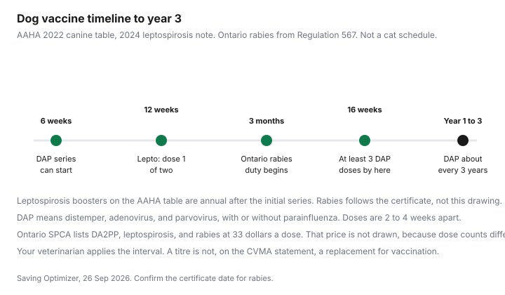

Pets · Canada
Pet Vaccine Costs in Canada: Core vs Optional Shots and Low-Cost Rabies Clinics
A vaccine visit is two decisions wearing one invoice: which antigens a veterinarian says this animal needs, and what that clinic charges to give them. This page separates Ontario’s rabies rule, the AAHA canine core list, and the only Canadian clinic prices that were printed on a page opened 26 Sep 2026. It does not tell you to vaccinate or to skip a shot. That is your veterinarian’s recommendation for the animal in front of them. Education only.
Key takeaways
- Ontario Regulation 567: cats, dogs, and ferrets three months and older must be kept immunised against rabies, on the date the certificate names.
- AAHA 2022 canine guidelines, with a 2024 note: core for all dogs includes distemper, adenovirus, parvovirus, leptospirosis, and rabies. Lyme and Bordetella are non-core on that page.
- Ontario SPCA 2026: rabies $33, and the same $33 for FVRCP, FeLV, DA2PP, leptospirosis, and Bordetella. Wellness exam $60. 4DX test $80.
- The CVMA says antibody titres are not a substitute for vaccination. No municipal rabies-clinic price was opened.
- A puppy series is several doses. Multiply only the doses your veterinarian schedules. The spay guide shows how a $33 vaccine lands on surgery day.
Core vaccines for dogs and cats
The American Animal Hospital Association’s 2022 canine vaccination guidelines, on the page opened 26 Sep 2026, define core vaccines as those recommended for all dogs regardless of lifestyle, unless there is a specific medical reason not to vaccinate. The at-a-glance list is distemper, adenovirus, parvovirus, with or without parainfluenza, leptospirosis, and rabies. A note on that page says the guidelines were updated in 2024 to include leptospirosis as a recommended core vaccine for all dogs. The task-force table gives a schedule shape: at least three doses of a distemper-adenovirus-parvovirus combination between 6 and 16 weeks of age, two to four weeks apart; then a dose within one year of the last initial dose; then boosters at intervals of three years. Leptospirosis on that table is two doses, two to four weeks apart, starting at 12 weeks, a dose within a year, then annual boosters. Rabies is “as required by law.”
The Canadian Veterinary Medical Association’s position statement on vaccination of animals says protocols, including which antigens and how often, should be set for the individual animal or group by a veterinarian. It says vaccines licensed in Canada are regulated by the Canadian Food Inspection Agency and have been tested when used as labelled. It also says the labelled dose should not be adjusted for the size or weight of the patient. A half dose to “save a small dog” is not supported by that statement. Adverse events can occur, most of them mild, and serious events including sarcomas and anaphylaxis are named as risks veterinarians should explain. This page does not weigh those risks for your animal.
A feline core guideline page was not opened. The Ontario SPCA sells FVRCP, rabies, and FeLV as separate $33 lines. Which of those a cat needs is the veterinarian’s assessment under the CVMA approach: exposure, severity, law, and the animal’s health. Do not copy the dog schedule onto a cat.
Rabies rules by province
Only Ontario’s regulation was opened. R.R.O. 1990, Regulation 567, Rabies Immunization, section 1, says every owner or person with care or custody of a cat, dog, or ferret three months of age or over shall ensure the animal is immunised against rabies. Section 3 says they must reimmunise by the date on the certificate. Section 4 says immunisation is carried out by a veterinarian authorised to practise in the Canadian or U.S. jurisdiction where the vaccine is given, or by that veterinarian’s lawfully authorised delegate, using a rabies vaccine licensed there and given according to the manufacturer’s instructions. The certificate contents are listed in the regulation, including the reimmunisation interval from the product monograph and the date by which the animal must be done again. A medical exemption exists only with a veterinarian’s statement and with the animal controlled so it is not exposed to rabies.
That is Ontario. British Columbia, Alberta, Quebec, and the Atlantic provinces were not opened, and their rules are not guessed. Ask your veterinarian what the statute requires where you live, and ask what the certificate date will be for the product they use. A three-year product and a one-year product are different clocks. The regulation ties the next date to the certificate, not to a slogan.
Low-cost public health and SPCA clinics
The priced clinic in this draft is the Ontario SPCA. Its 2026 table lists rabies at $33. FVRCP, FeLV, DA2PP, leptospirosis, and Bordetella are also $33 each. A wellness exam is $60. A 4DX test, which is a parasite screen and not a vaccine, is $80. A FeLV/FIV test is $90. The five clinics and the rule that they do not see emergencies are on the low-cost care guide. Basic care is described as available to the public, with booking priority for subsidy, no regular veterinarian, or Indigenous status.
A city or public-health rabies clinic can be cheaper than a full exam visit. No such clinic’s fee page was opened on 26 Sep 2026, so no “$15 clinic” figure is printed. Search your municipality and your local public health unit, and write down the date, the species, and whether an exam is included. An SPCA vaccine without the $60 exam is only a saving if the clinic will give the vaccine that way. Ask when you book. The deposit and cancellation rules for basic care are a $25 fee if you cancel inside seven days. That is on the veterinary-services page.
Titre testing vs boosters
The CVMA statement is direct: measurement of serum antibody titres is not a replacement for vaccination. Titres may not predict an individual patient’s immune status. True protective titres have not been established for every situation. A titre looks at one component of the immune response. Results may vary among tests and laboratories. Veterinarians are told to be cautious about minimum protective titres. If a clinic offers a titre instead of a booster, ask what decision the number will change, what it costs, and whether Ontario’s rabies duty is even allowed to be met by a titre. Regulation 567, as opened, speaks of immunisation and a certificate, not of an antibody number.
AAHA’s table still shows multi-year intervals for the distemper combination after the initial series, and annual intervals for leptospirosis. Those are guideline intervals for veterinarians, not permission to skip a rabies date on an Ontario certificate. Bring the certificate to the visit. The date on it is the date that matters for the legal shot.
Lifestyle vaccines (Lyme, Bordetella)
On the AAHA page, non-core vaccines are recommended for some dogs based on lifestyle, location, and exposure. The list includes Borrelia burgdorferi (Lyme), Bordetella, canine influenza, and a rattlesnake toxoid that is a U.S. product context, not a Canadian purchasing instruction. Lyme on the AAHA table is two doses, two to four weeks apart, then a dose within a year, then annual boosters. The page also says that in regions where a non-core pathogen is endemic, a practice may consider that vaccine core for its patients. The Public Health Agency of Canada’s Lyme risk page is a long list of communities and postal forward-sortation areas, not a map that orders a vaccine. Communities in more than one province appear on it, including Abbotsford, Ajax, Barrie, and Beauharnois on the extract opened 26 Sep 2026. Search your municipality. Then ask your veterinarian. The parasite guide covers the season question. It does not turn a risk-area listing into a product.
Bordetella is the kennel question as well as the vaccine question. The Ontario SPCA prices it at $33. A boarding facility can require it even when AAHA calls it non-core. Ask the facility for its list in writing. This draft did not open a kennel vaccine checklist with a dated requirement, so none is invented. Rattlesnake and canine influenza are on the AAHA non-core list. They are not given Canadian prices here.
Annual cost table
There is no national price. There is an Ontario SPCA menu and an AAHA dose pattern. A simple adult-dog illustration at that clinic, if the veterinarian uses a wellness exam, rabies, DA2PP, and leptospirosis, is $60 plus $33 plus $33 plus $33, which is $159. That stack assumes one dose of each and one exam. It is arithmetic on the 2026 table, not a quote, and it is the wrong stack if your veterinarian says a three-year rabies or distemper product means those lines are not due this year. Bordetella would add another $33. A 4DX test would add $80 and is not a vaccine.
A puppy is more doses. AAHA’s “at least three” combination doses between 6 and 16 weeks, plus two leptospirosis doses from 12 weeks, plus rabies as Ontario law requires from three months, is a series. Three DA2PP doses at $33 would be $99, two leptospirosis doses $66, and one rabies dose $33, which is $198 in vaccine lines before exams. The number of exams was not on the fee page. Do not add a guessed exam to make the total look complete. Ask the clinic how it bills a series.
| Line | How the source classes it | Schedule note | Ontario SPCA 2026 price |
|---|---|---|---|
| Dog: distemper, adenovirus, parvovirus, plus or minus parainfluenza | AAHA core for all dogs | At least 3 doses from 6 to 16 weeks, then within 1 year, then every 3 years | DA2PP $33 per dose |
| Dog: leptospirosis | AAHA core since the 2024 update note | Two doses from 12 weeks, then annual | $33 per dose |
| Dog or cat: rabies | AAHA core for dogs. Ontario law for cats, dogs, and ferrets from 3 months | As the certificate and the product say. Ontario: by the date on the certificate | $33 |
| Cat: FVRCP and FeLV | Not classed on the AAHA canine page. CVMA: individual decision | Not copied from the dog table | $33 each |
| Dog: Bordetella | AAHA non-core, lifestyle | A kennel may still require it | $33 |
| Dog: Lyme | AAHA non-core. May be treated as core where the disease is endemic | Two doses, then annual, on the AAHA table | Not a separate line on the SPCA fee table |
| Wellness exam | Clinic visit, not a vaccine | Ask if it is billed with each booster | $60 |

Put the visit you are actually due for on the monthly budget and, if boosters clump in one season, on a sinking fund. A $159 illustration is not a bill until the clinic prints it.
Sources & date stamps
- Ontario Regulation 567, Rabies Immunization, ontario.ca/laws. Cats, dogs, and ferrets from three months. Certificate date controls the next dose. Opened 26 Sep 2026.
- Ontario SPCA veterinary services, 2026 fee table: exam $60, listed vaccines $33, 4DX $80. Opened 26 Sep 2026.
- AAHA 2022 canine vaccination guidelines, core and non-core pages, including the 2024 leptospirosis note and the dose table. Opened 26 Sep 2026.
- CVMA position statement, Vaccination of Animals: individual protocols, titres are not a replacement, labelled dose not adjusted for weight. Opened 26 Sep 2026.
- Public Health Agency of Canada Lyme risk-area community list. Not a vaccine price and not a month-by-month season. Opened 26 Sep 2026.
- No municipal low-cost rabies clinic price was opened.
Frequently asked questions
Which vaccines are core for dogs and cats?
The 2022 AAHA canine guidelines, updated in 2024, list core vaccines for all dogs as distemper, adenovirus, parvovirus, with or without parainfluenza, plus leptospirosis and rabies, unless there is a medical reason not to vaccinate. Lifestyle vaccines on that page include Lyme, Bordetella, canine influenza, and rattlesnake toxoid. A matching feline core schedule was not on the canine page. The Canadian Veterinary Medical Association says the veterinarian should choose antigens for the individual animal. This is not a prescription.
Is rabies vaccination mandatory in my province?
In Ontario, Regulation 567 under the Health Protection and Promotion Act requires every owner of a cat, dog, or ferret three months of age or older to keep the animal immunised against rabies, and to reimmunise by the date on the certificate. The vaccine must be given by a veterinarian authorised in Canada or the United States, or their delegate, using a licensed vaccine as the manufacturer directs. Other provinces were not opened. Read your province’s rule, and ask your veterinarian.
Where can I find a low-cost rabies clinic?
The Ontario SPCA 2026 table lists rabies at $33, the same price as FVRCP, FeLV, DA2PP, leptospirosis, and Bordetella, with a wellness exam at $60. Its five clinics do not treat emergencies. A municipal public-health rabies clinic fee was not on a page opened for this draft. Phone the local health unit and the SPCA clinic rather than relying on an old poster.
What is titre testing?
A titre is a measure of antibody in a blood sample. The Canadian Veterinary Medical Association’s vaccination statement says titre testing is not a replacement for vaccination. It says protective titres are not always established, titres measure one part of the immune response, and results can differ by test and laboratory. Ontario’s rabies rule is an immunisation duty, not a titre duty. Ask your veterinarian before you pay for a titre instead of a legally required shot.
Are lifestyle vaccines like Lyme necessary?
AAHA lists Lyme and Bordetella as non-core: for some dogs, based on lifestyle, geography, and exposure. It also says that where a non-core disease is endemic, a clinic may treat that vaccine as core for its patients. The Public Health Agency of Canada publishes a community list of Lyme risk areas, not a yes for every dog in those communities. Your veterinarian makes the call for your animal. The Ontario SPCA price, if you use that clinic, is $33 for Bordetella. Lyme vaccine was not a separate line on that fee table.